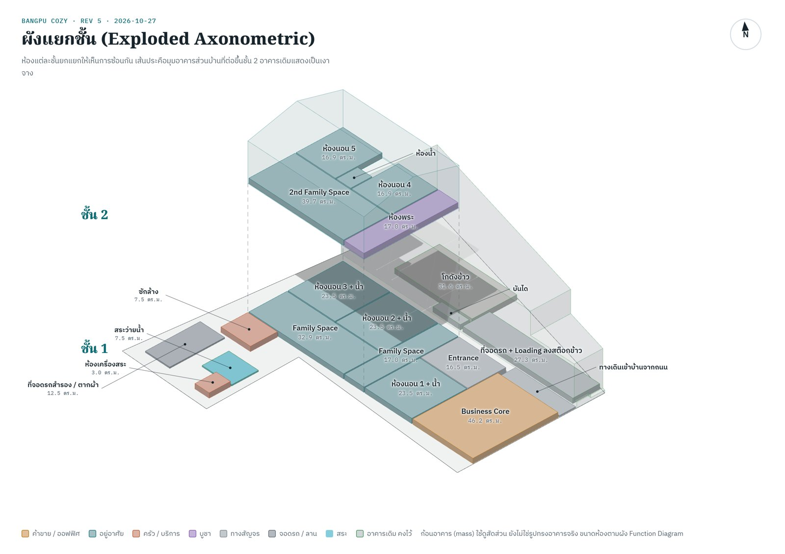
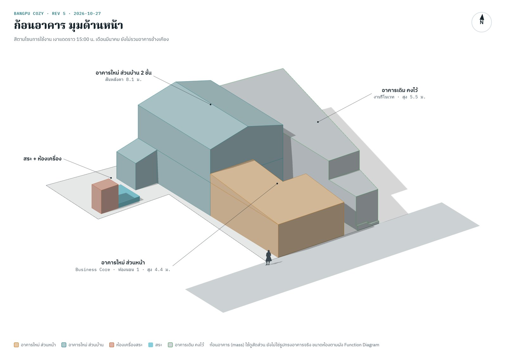
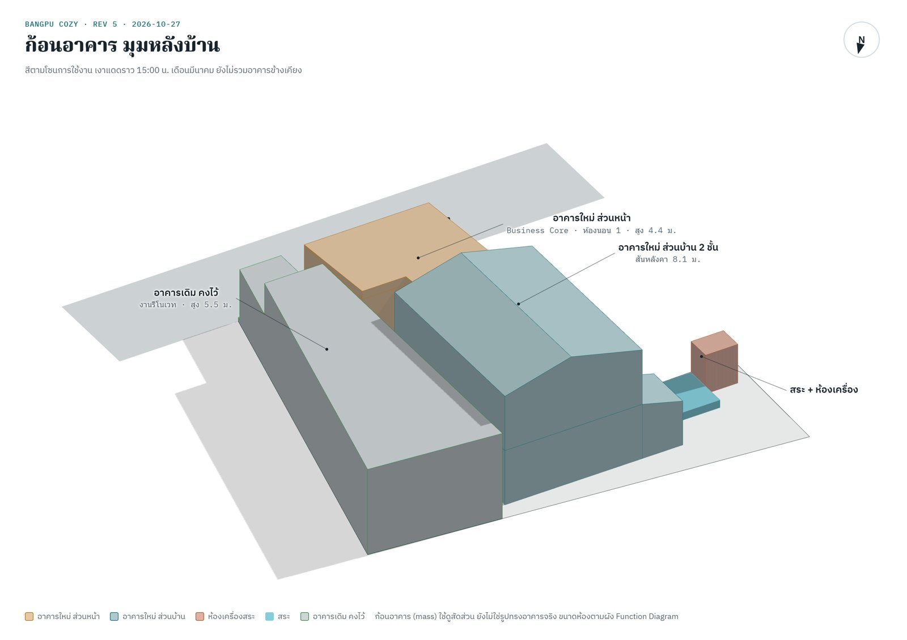

BANGPU COZY · REV 5
ภาพก้อนอาคาร (Axonometric)
ภาพนิ่งจากโมเดลก้อนอาคาร แสดงการซ้อนชั้นและสัดส่วนของอาคารใหม่กับอาคารเดิม แตะที่ภาพเพื่อเปิดภาพขนาดเต็มและซูมดูรายละเอียด ถ้าอยากหมุนดูเองหรือดูเงาแดดตามเวลา ไปที่ ผังบนที่ดินจริง แท็บ 3D + แดด



ก้อนอาคาร (mass) ใช้ดูสัดส่วนและการจัดวาง ยังไม่ใช่รูปทรงอาคารจริงหรือแบบก่อสร้าง